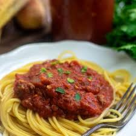

Dad's Spaghetti

Description
Spaghetti like no other ever invented. Enjoy!
Ingredients
- 1 pound spaghetti noodles
- 2 pounds of lean ground beef
- 1 onion, minced
- 1 6oz. can tomato paste
- 2 10.75oz. cans condensed tomato soup
- 2 1/2 cups water
Steps
- In a large skillet over medium high heat, brown ground beef with onions. Drain
- Combine ground beef, tomato paste, tomato soup and water. Cook until heated through.
About 5-10 minutes.
- Serve sauce on top of cooked noodles. Enjoy.
Back to main page